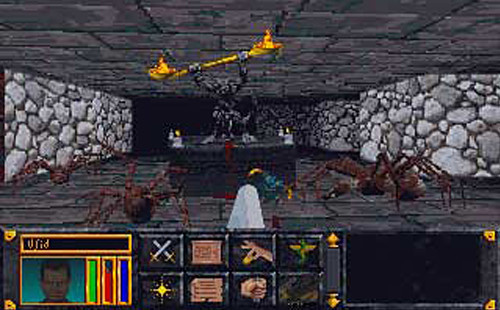

En este tema daremos un breve vistazo al desarrollo de videojuegos a lo largo de la historia y en como estos
han ido cambiando hasta nuestros días. Además veremos los conceptos básicos del desarrollo de los mismos como
son una historia, el diseño de niveles, la narrativa, etc.
Tendremos también una introducción al programa RPG Maker, donde veremos los conceptos básicos, como la
interfaz del programa y las diferentes herramientas que utilizaremos, creando nuestro primer videojuego.
- Conocer como ha sido el desarrollo de los videojuegos hasta nuestros tiempos.
- Aprender a desarrollar una historia para un videojuego.
- Aprender mediante otros juegos de la industria, el desarrollo de mapas (2D, 3D, FPS, etc).
- Conocer el programa RPG Maker y las diferentes herramientas con las que contaremos.
- Empezar nuestro primer videojuego funcional.
En un principio los juegos de rol eran jugados en tableros, un clásico de este género es el famoso Dragones y Mazmorras. En este juego cada jugador tenia un personaje con el que completar la aventura, era habitual que los jugadores se inventaran una historia de fondo para sus personajes, una especie de motivación que los llevaba a realizar tal aventura.
Las acciones estaban divididas en turnos, donde el jugador lanzaba un dado y se desplazaba la cantidad de casilla que obtuviera.
Un juego desde luego bastante complicado, ya que se debía llevar la cuenta de cada stat del personaje además de calcular matemáticamente el daño realizado a un monstruo.
Más tarde con la masificación de los ordenadores personales, comenzaron a proliferar los juegos de RPG (Role Play Game) en esta plataforma, uno de los más conocidos fue The elder scrolls: Arena

Este juego utiliza la perspectiva de primera persona por lo que podemos vivir la aventura desde los ojos del personaje.
Sin embargo los juegos que crearemos en este curso no son juegos en primera persona, si no más bien, utilizaremos otra perspectiva llamada isométrica. En esta perspectiva podemos observar como se desarrolla el juego con una vista desde arriba.
Uno de los primeros juegos en usar esta perspectiva fue el ultra conocido Warcraft 1. Este juego, no fue un juego de rol propiamente dicho, pero estaba claramente influenciado por este género.
Más adelante en el tiempo, una compañía llamada Nintendo (compañía que en algún momento de su historia fabricaba naipes) lanza el clásico Pokemon, un juego de rol con una perspectiva variante de la isométrica llamada Top-Down la cual nos presentaba el mapa como una proyección ortogonal.

No podemos terminar este apartado sin mencionar uno de los juegos de rol más conocidos en todo el mundo, World of warcraft, en este juego podemos variar este la perspectiva en primera persona y tercera persona. El juego esta ambientado en el universo del que lleva su nombre y nos permite desde configurar a nuestro personaje con diferentes clases (mago, guerrero, druida, etc) hasta escoger un sexo y una raza (humano, trol, orco, enano, etc). Siendo el juego un programa informático podemos jugarlo sin que el hecho de llevar las cuentas sea una desventaja ya que el juego se encargara de reorganizar las estadísticas con cada subida de nivel.
Ya hemos visto como ha sido la evolución de los juegos de rol a lo largo de tiempo, y de como estos han ido cambiando de técnicas de visualización para adaptarse a las limitaciones del hardware de su época.
En este apartado veremos la parte más importante de un juego (sobre todo de los de rol), su historia. La mayoría de juegos que hemos visto beben mucho de la literatura fantástica como El señor de los anillos.
Una serie de libros que cuentan las hazañas de un grupo de héroes en su misión de destruir en anillo único en el monte del destino.
También tenemos el conocido juego de StarCraft que toma muchas referencias de la saga de libros Dune.
Saga de ciencia ficción que narra los conflictos políticos entre diferentes planetas.
Como podemos ver, cuanto mejor sea la historia es más probable que mejor sea nuestro videojuego, ya que el
jugador siempre se sentirá atraído por una historia más interesante. Por lo tanto, para empezar a desarrollar
nuestra historia debemos de hacernos las siguientes preguntas:
- ¿Qué motiva al personaje a realizar su aventura?
- ¿En qué época se desarrolla la historia? (pasado, presente, futuro)
- ¿Cuál es el desencadenante de la historia?
- ¿Tomaremos prestadas ideas de alguna historia conocida?
- ¿Cuáles son las motivaciones del villano?
- ¿Existe alguna relación entre el héroe y el villano?
- ¿Cómo terminará nuestra historia?
- ¿Es posible una segunda parte?
RPG Maker es un software que nos permite en muchas otras cosas la planificación, implementación, testeo y
producción de videojuegos. Como su nombre indica, el software se especializa en la creación de juegos tipo
RPG.
En este caso, voy a centrarme en el RPG Maker MV (RMMV, para acortar), que fue liberado en 2015.
¿Por qué esta versión y no otra? Principalmente, por el conjunto de mejoras; cambios con respecto a versiones
anteriores como el RPG Maker XP, RPG Maker VX o RPG Maker VX Ace.
La más destacable: el tamaño de la textura (tile) aumentó de 32 x 32 píxeles a 48 x 48 px, al igual que la
resolución final de 544 x 416 px a 816 x 624 px.
También, a nivel de programación, se pasó de los scripts (en Ruby personalizado, RGSS) a los plugins (en
JavaScript).
¿Incidirá en el desarrollo de los juegos?
Dependerá de los conocimientos de cada persona y del equipo que tenga; por lo general, diría que el JS pide
más recursos que el RGSS.
Y, acerca de la distribución, con el RMMV se podrá elegir la plataforma donde jugarlo, exportándolo a Windows,
Mac OS o Android/iOS. Incluso en HTML5, para jugarlo en navegador web.
Si te entró la curiosidad, puedes comprarlo en su página oficial o por Steam
(facilita las actualizaciones y la gestión de DLCs).
La traducción al español es demasiado literal en algunos aspectos, pero útil.
Eso sí, hay elementos que se mantienen en inglés (mejor que en japonés); igual en los plugins (el código de
programación).
Esta interfaz será usada para crear y editar mapas y eventos, principalmente, además de acceder a otras opciones.
[1] Barra de menú:
Se desglosan todas las funciones que tiene el RMMV, pudiendo acceder a cada una desde aquí. Además, en algunas
de las funciones, se muestra la tecla o combinación de teclas para acceder de forma rápida a la misma (atajo
de teclado).
[2] Barra de herramientas:
Ofrece acceso directo a alguna de las funciones del menú. Si pasas el cursor por encima de cualquiera de los
iconos (menos en algunos, por defecto), aparece información sobre la función que tiene cada uno.
[3] Paleta de texturas:
Se muestra el tileset (conjunto de baldosas) elegido, con sus pestañas correspondientes (representan
diferentes capas). Es la paleta de colores que se utilizará para pintar un mapa.
Un tile se podría definir como una baldosa, entendiendo cada mapa creado como un conjunto de baldosas
(casillas) vacías. De este modo, cada casilla se rellenaría con la textura de la baldosa elegida en el
tileset.
[4] Lista de mapas:
Se muestra la estructura listada de mapas creados en el proyecto actual.
[5] Vista de mapas:
Muestra el contenido del mapa seleccionado. Además, permite diseñar la apariencia y designar eventos.
[6] Barra de estado:
Muestra información sobre el mapa actual (número, nombre, tamaño y coordenadas) en los tres espacios centrales.
En el de la izquierda, se mostrará información sobre la imagen donde esté posado el cursor, dentro del tileset.
En el de la derecha, el nombre del evento de una casilla seleccionada en el mapa (en modo evento).
Antes que nada, asegúrate de tener espacio suficiente en el disco duro, ya que cada proyecto consumirá un buen cacho de la unidad (unos 400 MB). Tras esto, inicia el RPG Maker MV (RMMV, para acortar). Estando en la ventana principal, haz click en Archivo > Nuevo proyecto o sobre el icono de la hoja (el primero de la izquierda).
Lo siguiente será definir el nombre del proyecto y la ubicación donde se generará la estructura de carpetas y archivos necesarios. Por defecto, el proyecto se guardará dentro de la carpeta “Games”, situada en el directorio “Mis Documentos”.
A continuación pintaremos el mapa con alguna textura e iniciaremos el juego con el botón de play para así hacer un test del juego.
Aparecerá una pantalla de título con una bonita canción y las siguientes opciones:
• Nueva partida.
• Continuar: Debe aparecer atenuado, ya que no hay partidas guardadas desde las que
continuar. Iniciaría la última partida que tuviéramos guardada.
• Opciones: Abre una ventana con seis opciones relacionadas con el juego:
- Correr siempre: De forma predeterminada, el personaje del jugador puede correr
al doble de velocidad durante el juego manteniendo presionada la tecla Shift. Con esta opción
establecida en On, no es necesario mantener pulsada la tecla.
- Recordar comando: Esto indica al juego que recuerde la última opción
seleccionada en varios menús del juego (como el menú de batalla y el menú de estado del
personaje). Por defecto está apagado, y encenderlo es cuestión de gustos.
- Volumen de música: Te permite subir y bajar el volumen de Background Music
del juego. El valor predeterminado es 100%.
- Volumen de ambiente: Te permite controlar el volumen del sonido de fondo del
juego. El valor predeterminado es 100%.
- Volumen de melodía: Como las dos opciones anteriores, pero para efectos
musicales.
- Volumen de efectos: Igual que las anteriores, pero este es para efectos de
sonido.
De ahora en adelante tendremos un proyecto propio que iremos desarrollando a lo largo del curso.